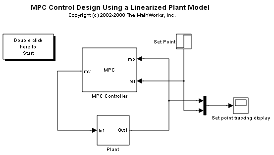

MPC Control Design Using a Linearized Plant Model
This demo opens the Model Predictive Control Design Tool to tune an MPC controller for a nonlinear plant in Simulink®. If Simulink® Control Design™ is installed, the MPC internal model will be obtained from linearization of the plant model.
